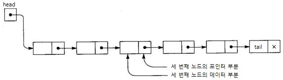

03 리스트(List)
1. 리스트란?
리스트란 보통 구조체(여러 가지 데이터를 한 데 묶어 놓을 수 있는 자료형)를 이용하여 포인터 변수를 설정해 두고, 이 변수를 이용하여 다른 데이터 구조체의 주솟값을 저장함으로써 데이터를 연결하는 방식의 데이터 구조입니다.
리스트를 이용하면 다른 데이터 구조도 표현 가능합니다. 그러나 이 프로그램에서는 리스트 본연의 기능에 충실하기 위하여 선형 연결 리스트(Linear Linked List)의 형태로 구현하였습니다.

2. 리스트의 원리
리스트는 구조체를 이용하여 자기 참조를 반복함으로써 데이터를 저장하는 데이터 구조입니다. 즉, 구조체에는 데이터 할당을 위한 변수와 참조를 위한 포인터 변수가 존재합니다. 따라서 데이터를 입력할 때에는 원하는 자리에 할 수 있으며, 해당 위치 바로 직전에 존재하는 데이터의 참조 변수를 통해 조작하면 됩니다. 이러한 구조체 한 덩어리 한 덩어리를 노드(Node)라고 합니다. 일반적으로 가장 처음의 위치를 제시하는 노드를 'Head', 가장 마지막의 위치를 알리는 노드를 'Tail'이라고 하며, Head는 데이터가 없고 Tail은 참조 변수가 없는(null) 형태로 이루어져 있습니다.
이 프로그램에서는 간단한 연결 리스트(Linked List)를 구현하였으며, 데이터의 입력 및 제거를 상세히 구현해 내었습니다.
리스트에서의 데이터의 입력은 앞서 스택과 큐와는 다른데, Head와 Tail 사이에 있는 임의의 데이터 간에 새로운 데이터 노드를 추가할 수도 있습니다. 위 그림을 예로 들면, E 노드와 G 노드 사이에 새로운 데이터 노드 F를 입력하고자 할 때, 새로운 데이터를 생성한 후 그것의 포인터가 G 노드의 주솟값을 할당하게 한 후, E 노드의 포인터가 새로운 데이터 노드의 주솟값을 할당하는 과정을 거치면서 도중 입력을 하게 됩니다. 이와는 반대로 도중에 제거를 하고자 할 때, 위 그림에서 B 노드와 D 노드 사이에 있는 C 노드를 제거하고자 할 때에는 B 노드의 포인터에 D의 주솟값을 할당하고 그대로 C 노드를 제거(free() 이용)하면 됩니다.
3. 용어 정리
| 용어 | 의미 |
|---|---|
| 연결 리스트(Linked List) | 기본적인 리스트 |
| 노드(Node) | 데이터를 저장하고 참조 변수를 포함하고 있는 집합체 |
| 헤드(Head) | 리스트의 근간이 되는 노드. 연결 리스트에서는 참조 변수만 가짐 |
| 테일(Tail) | 리스트의 마지막 부분이 되는 노드. 데이터는 있을 수도, 없을 수도 있으며 참조 변수는 null인 형태로 존재. |
4. 예제
처음 1부터 12까지 차례대로 쓰여 있는 리스트를 만든다. 그 후 짝수가 쓰여 있는 노드를 제거한 후 그 자리에 '35'를 입력한 노드를 생성하시오.